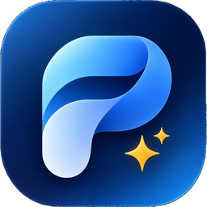
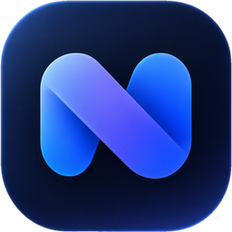
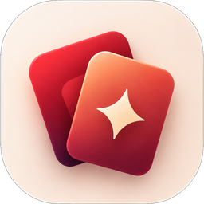

Krevn Studio is a small independent studio from Italy. There are three of us, and we make apps for iPhone and Android, plus a few tools for the web and the desktop.
Each project is designed and written by one of us, start to finish. Below is everything we have released or are working on.
Short trips through history. Pick an era, read what really happened and collect medals along the way. Echoes mode tells the same events in first person.
Weights, powerbuilding and calisthenics in one training app. It tracks how tired each muscle is and lays out progressions as a skill tree.
Write down when your documents, cards and certificates expire, and see how many days you have left.
An archive of forgotten objects, dead technologies and lost civilizations. Over a hundred relics, each with its own illustration and story.

Automations for Android. It changes volume, brightness or Wi-Fi when something happens: a time of day, a Bluetooth device, arriving somewhere.

Keeps the folders you choose in sync across your computers, through a server you run yourself. It also works for moving files from one machine to another.
Listens to a preview of the songs you liked on Spotify and sorts them into folders by mood. Everything runs in your browser and nothing is saved.

Italian card games online with your friends: Scopa, Briscola, Tre Sette, Bisca, Dubito and Cactus. You can seat AI bots at the table too.
The studio is supported by Daniel Cannoni, Giovanna Galuppo, Attilio Nikolas Romeo and Nicolò di Tomaso.
For help with an app, bugs or anything else, write to us. Tell us which app and which phone you are using.
 Krevn Studio
Krevn Studio